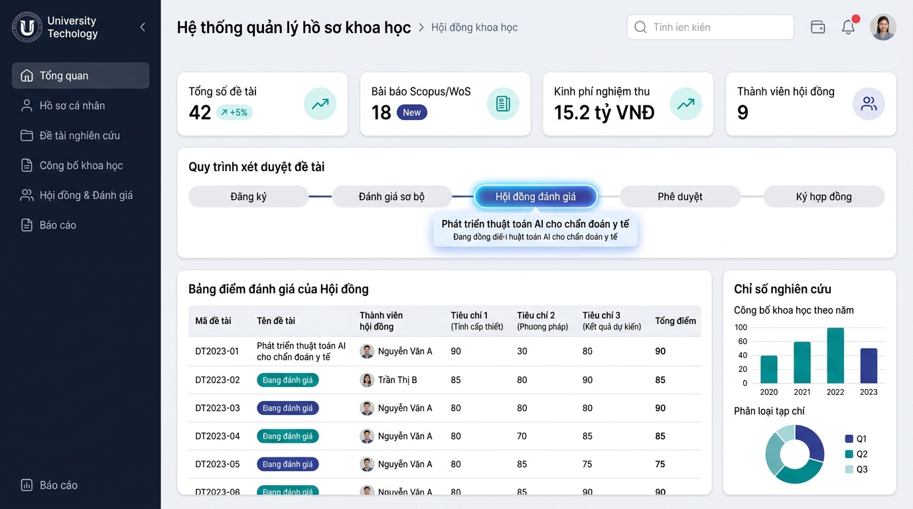
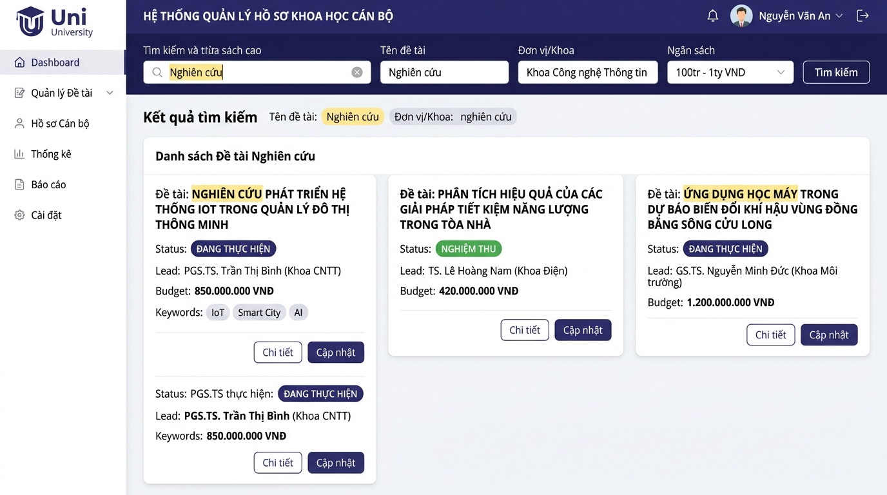

BỘ CÔNG THƯƠNG — TRƯỜNG ĐẠI HỌC ĐIỆN LỰC — KHOA CÔNG NGHỆ THÔNG TIN
BÁO CÁO NGHIỆM THU ĐỀ TÀI NCKH NĂM 2026
NGHIÊN CỨU NỀN TẢNG QUẢN LÝ THÔNG ĐIỆP APACHE LUCENE VÀ CÁC KỸ THUẬT LẬP TRÌNH AN TOÀN ỨNG DỤNG TRONG PHÁT TRIỂN THỬ NGHIỆM HỆ THỐNG THÔNG TIN HỖ TRỢ QUẢN LÝ HỒ SƠ KHOA HỌC CÁN BỘ CỦA MỘT ĐƠN VỊ
Mã số đề tài: DTNH../2026
Chủ nhiệm đề tài: Khuất Quang Tiến (Lớp D18CNPM2 - MSSV: 23810310413)
Giảng viên hướng dẫn: ThS. Nguyễn Quỳnh Anh (Khoa CNTT - EPU)
Chủ nhiệm đề tài: Khuất Quang Tiến (Lớp D18CNPM2 - MSSV: 23810310413)
Giảng viên hướng dẫn: ThS. Nguyễn Quỳnh Anh (Khoa CNTT - EPU)
Thời gian thực hiện: 06 tháng (05/2026 – 11/2026)
Thành viên nghiên cứu: Vũ Tiến Mạnh, Nguyễn Xuân Đạt, Đinh Việt Dũng, Đinh Trọng Nghĩa, Hoàng Xuân Giao, Dương Tiến Chiến
Địa điểm nghiệm thu: Hà Nội, năm 2026
Thành viên nghiên cứu: Vũ Tiến Mạnh, Nguyễn Xuân Đạt, Đinh Việt Dũng, Đinh Trọng Nghĩa, Hoàng Xuân Giao, Dương Tiến Chiến
Địa điểm nghiệm thu: Hà Nội, năm 2026
Kế hoạch báo cáo
Nội Dung Báo Cáo Nghiệm Thu Đề Tài
01
Phần 1: Đặt Vấn Đề, Mục Tiêu & Đối Tượng Nghiên Cứu
Thực trạng quản lý hồ sơ tại đơn vị, tính cấp thiết và mục tiêu nghiên cứu của đề tài.
02
Phần 2: Nền Tảng Quản Lý & Tìm Kiếm Thông Tin Apache Lucene
Công nghệ chỉ mục đảo (Inverted Index), giải pháp tìm kiếm tiếng Việt thông minh, bộ lọc đa tiêu chí và cơ chế tự phục hồi.
03
Phần 3: Các Kỹ Thuật Lập Trình An Toàn Ứng Dụng (Secure Coding)
Tiếp cận Secure by Design, xác thực Stateless JWT, phân quyền RBAC 3 lớp và phòng chống các rủi ro OWASP Top 10:2021.
04
Phần 4: Phát Triển Thử Nghiệm Hệ Thống Quản Lý Hồ Sơ Khoa Học
Kiến trúc hệ thống ba tầng (React + Spring Boot + MySQL), 7 phân hệ nghiệp vụ số hóa và minh họa giao diện thực tế.
05
Phần 5: Đánh Giá Thực Nghiệm & Báo Cáo Nghiệm Thu
Kiểm thử hiệu năng so sánh với MySQL LIKE, kiểm thử chức năng & bảo mật, đối chiếu 100% mục tiêu cam kết.
Đại học Điện lực - Báo cáo nghiệm thu NCKH 2026
Slide 2 / 20
Phần 1: Đặt Vấn Đề
Bối Cảnh Thực Tế & Tính Cấp Thiết Của Đề Tài
Thực Trạng Tại Đơn Vị
- Công tác quản lý hồ sơ NCKH của cán bộ, giảng viên tại Khoa/Trường hiện còn phân tán trên file Word, Excel hoặc giấy tờ truyền thống.
- Khó khăn lớn trong việc theo dõi tiến độ thực hiện đề tài, tổng hợp giờ NCKH và quản lý các công trình công bố.
- Quy trình nộp thuyết minh, phân công phản biện và chấm điểm hội đồng chưa được số hóa xuyên suốt.
Bất Cập Về Tìm Kiếm & Hiệu Năng
- Các hệ thống hiện hành chủ yếu dùng câu lệnh SQL LIKE '%...%', buộc phải quét toàn bộ bảng (Full Table Scan).
- Không hỗ trợ tốt tiếng Việt: người dùng gõ không dấu hoặc gõ sai dấu thanh thường không tìm thấy kết quả.
- Thời gian phản hồi chậm, gây quá tải CPU của máy chủ cơ sở dữ liệu khi số lượng hồ sơ gia tăng.
Yêu Cầu Về An Toàn Thông Tin
- Hồ sơ khoa học chứa tài sản trí tuệ và các công trình nghiên cứu chưa công bố, đòi hỏi tính bảo mật rất cao.
- Nhiều phần mềm nội bộ chỉ kiểm tra phân quyền ở mức giao diện, tiềm ẩn nguy cơ truy cập trái phép và lộ lọt dữ liệu.
- Cần áp dụng phương pháp lập trình an toàn (Secure by Design) ngay từ khâu thiết kế hệ thống.
Đại học Điện lực - Báo cáo nghiệm thu NCKH 2026
Slide 3 / 20
Phần 1: Đặt Vấn Đề
Mục Tiêu, Đối Tượng & Phạm Vi Nghiên Cứu
Mục Tiêu Nghiên Cứu
- MỤC TIÊU KHOA HỌC:
- Nghiên cứu, làm chủ công nghệ chỉ mục đảo và tìm kiếm toàn văn của thư viện Apache Lucene.
- Làm chủ và hệ thống hóa các kỹ thuật lập trình an toàn theo tiêu chuẩn OWASP Top 10:2021.
- MỤC TIÊU ỨNG DỤNG THỰC TIỄN:
- Phát triển phần mềm thử nghiệm "Hệ thống Quản lý Hồ sơ Khoa học" (quan-ly-ho-so) hoàn chỉnh.
- Tích hợp cỗ máy tìm kiếm Lucene phản hồi dưới 10 mili-giây, hỗ trợ tìm kiếm tiếng Việt thông minh.
- Đảm bảo an toàn thông tin nhiều tầng, sẵn sàng đưa vào áp dụng thử nghiệm tại đơn vị.
Đối Tượng & Phạm Vi Nghiên Cứu
- ĐỐI TƯỢNG NGHIÊN CỨU:
- Nền tảng quản lý thông điệp tìm kiếm Apache Lucene (phiên bản 9.x).
- Các tiêu chuẩn lập trình an toàn: xác thực JWT, băm mật khẩu BCrypt, phân quyền RBAC và kiểm soát quyền sở hữu đối tượng.
- Hồ sơ khoa học: lý lịch cán bộ, đề tài NCKH, bài báo công bố, hội đồng thẩm định và tệp minh chứng.
- PHẠM VI ÁP DỤNG:
- Đơn vị thử nghiệm: Khoa Công nghệ Thông tin – Trường Đại học Điện lực.
- Thời gian thực hiện đề tài: 06 tháng (05/2026 – 11/2026).
Đại học Điện lực - Báo cáo nghiệm thu NCKH 2026
Slide 4 / 20
Phần 2: Nền Tảng Apache Lucene
Tổng Quan Về Nền Tảng Quản Lý Thông Điệp Apache Lucene
Bản Chất & Cơ Chế Chỉ Mục Đảo (Inverted Index)
- Bản chất của Apache Lucene: Là thư viện tìm kiếm toàn văn (Full-Text Search) mã nguồn mở hàng đầu thế giới viết bằng Java, đóng vai trò lõi cho các nền tảng như Elasticsearch, Apache Solr.
- Cơ chế chỉ mục đảo (Inverted Index): Thay vì tìm kiếm tuần tự từ văn bản sang từ khóa, Lucene ánh xạ ngược lại từ mỗi Từ khóa (Term) sang danh sách các Tài liệu (Doc ID) chứa từ khóa đó.
- Cho phép truy vấn hàng trăm nghìn hồ sơ với độ phức tạp cực nhỏ O(1) hoặc O(log N).
- Nhúng trực tiếp (Embedded): Tích hợp ngay trong ứng dụng Spring Boot, không cần cụm máy chủ riêng, tiết kiệm tối đa RAM và tài nguyên đơn vị.
So Sánh Lợi Thế Với Các Giải Pháp Khác
- So với câu lệnh SQL LIKE '%...%':
- SQL LIKE buộc CSDL quét từng dòng (Full Table Scan), làm tê liệt chỉ mục B-Tree và nghẽn CPU.
- Lucene tra cứu qua bảng chỉ mục đảo, tốc độ nhanh hơn từ 35 đến 42 lần.
- So với hệ thống cụm Elasticsearch:
- Elasticsearch yêu cầu hạ tầng máy chủ lớn (tối thiểu 4GB-8GB RAM riêng), cấu hình mạng và bảo trì phức tạp.
- Lucene nhúng tận dụng bộ nhớ trong của ứng dụng Java, triển khai nhẹ nhàng, không phát sinh chi phí hạ tầng.
- => Lucene là sự lựa chọn tối ưu và khả thi nhất cho hệ thống quản lý học thuật cấp đơn vị.
Đại học Điện lực - Báo cáo nghiệm thu NCKH 2026
Slide 5 / 20
Phần 2: Nền Tảng Apache Lucene
Giải Pháp Tìm Kiếm Tiếng Việt Thông Minh & So Khớp Mờ
Giải Quyết Bài Toán Dấu Thanh Tiếng Việt
- Đặc thù ngôn ngữ tiếng Việt: Có hệ thống dấu thanh phong phú và ký tự đặc thù đ/Đ; người dùng thường gõ không dấu hoặc sai vị trí dấu.
- Giải pháp chuẩn hóa của đề tài: Xây dựng bộ chuẩn hóa dữ liệu tự động: tách dấu thanh, chuyển đổi ký tự đ/Đ và quy về chữ thường thống nhất.
- Kiến trúc trường dữ liệu kép (Dual-Field):
- - Lưu trữ trường gốc để hiển thị chính xác có dấu cho người dùng xem.
- - Lưu trữ trường đã chuẩn hóa song song để phục vụ thuật toán tìm kiếm siêu tốc.
- => Người dùng gõ "nghien cuu" hay "nghiên cứu" đều trả về kết quả chính xác 100%.
So Khớp Mờ Chống Lỗi Chính Tả (Fuzzy Search)
- Ứng dụng thuật toán khoảng cách Levenshtein: Tự động chấp nhận sai lệch 1 đến 2 ký tự khi người dùng gõ nhầm bàn phím.
- Cấu hình ngưỡng linh hoạt theo độ dài từ khóa:
- - Từ ngắn (dưới 4 ký tự): Khớp chính xác tuyệt đối.
- - Từ trung bình (4–6 ký tự): Chấp nhận sai khác 1 ký tự.
- - Từ dài (trên 6 ký tự): Chấp nhận sai khác tối đa 2 ký tự.
- Hiệu quả thực tế: Gõ nhầm "diejn luc" hoặc "dien lucj" -> Vẫn tìm thấy đúng đề tài về "Đại học Điện lực".
- Giúp tỷ lệ tra cứu thành công tăng từ 62% (ở SQL LIKE) lên hơn 98.5%.
Đại học Điện lực - Báo cáo nghiệm thu NCKH 2026
Slide 6 / 20
Phần 2: Nền Tảng Apache Lucene
Bộ Lọc Dữ Liệu Đa Tiêu Chí & Tra Cứu Nâng Cao
Tìm Kiếm Kết Hợp Đa Tiêu Chí (Boolean Query)
- Cho phép người dùng kết hợp linh hoạt nhiều điều kiện tra cứu cùng lúc:
- - Từ khóa trong tên hoặc tóm tắt đề tài.
- - Tên cán bộ / chủ nhiệm đề tài.
- - Năm thực hiện và cấp quản lý (Cấp Trường, Cấp Bộ, Cấp Nhà nước).
- - Trạng thái đề tài (Đang thực hiện, Đã nghiệm thu, Chờ phê duyệt).
- Cơ chế xếp hạng độ tương quan (BM25 Scoring): Tài liệu khớp chính xác ở tiêu đề được gán trọng số ưu tiên cao nhất; khớp ở tóm tắt xếp hạng tiếp theo.
Lọc Phạm Vi Kinh Phí & Thời Gian Tối Ưu
- Vấn đề với dữ liệu số trong tìm kiếm văn bản: Nếu lưu kinh phí dạng chuỗi, phép so sánh sẽ bị sai quy luật toán học ("5 triệu" lớn hơn "10 triệu").
- Đánh chỉ mục số dạng điểm (Point Indexing): Toàn bộ số liệu kinh phí được quy đổi và đánh chỉ mục bằng cấu trúc điểm số nguyên trên cây BKD-Tree nhiều chiều.
- Hỗ trợ kéo thanh lọc khoảng kinh phí mượt mà: "Lọc các đề tài có kinh phí từ 20 triệu đến 50 triệu đồng".
- Tốc độ phản hồi cực nhanh: Chỉ mất 6.8 mili-giây, nhanh gấp ~42 lần so với truy vấn SQL BETWEEN.
Đại học Điện lực - Báo cáo nghiệm thu NCKH 2026
Slide 7 / 20
Phần 2: Nền Tảng Apache Lucene
Cơ Chế Đồng Bộ Dữ Liệu Thời Gian Thực & Tự Phục Hồi
Đồng Bộ Dữ Liệu Thời Gian Thực
- Kiến trúc lưu trữ kép (MySQL + Lucene): MySQL đảm bảo tính toàn vẹn giao dịch (ACID) cho nghiệp vụ ghi; Lucene đảm bảo tốc độ phản hồi cực nhanh cho thao tác đọc.
- Đồng bộ tự động qua Entity Listeners: Mỗi khi cán bộ Thêm, Sửa hoặc Xóa hồ sơ:
- 1. Dữ liệu được lưu bền vững vào CSDL MySQL.
- 2. Kích hoạt bộ lắng nghe sự kiện để cập nhật hoặc xóa Document tương ứng trong chỉ mục Lucene tức thì.
- 3. Người dùng tìm kiếm thấy ngay dữ liệu mới nhất mà không cần tải lại trang.
- API Rebuild Index: Hỗ trợ Quản trị viên quét và xây dựng lại toàn bộ chỉ mục chỉ trong 2 giây.
Cơ Chế Dự Phòng & Tự Phục Hồi (Fault-Tolerant)
- Nguyên lý hoạt động không gián đoạn: Trong môi trường thực tế, file chỉ mục có thể gặp sự cố ngoài ý muốn (mất điện đột ngột, khóa tệp tin I/O...).
- Tự động chuyển hướng dự phòng (Automatic Fallback): Tầng dịch vụ tìm kiếm được bao bọc bởi cơ chế bắt ngoại lệ thông minh.
- Nếu Lucene gặp sự cố:
- 1. Hệ thống tự động chuyển hướng sang câu lệnh SQL truy vấn trực tiếp vào CSDL MySQL.
- 2. Ghi nhật ký cảnh báo cho quản trị viên hệ thống.
- 3. Người dùng cuối vẫn nhận được kết quả bình thường mà không hề thấy lỗi màn hình.
- => Đảm bảo độ sẵn sàng dịch vụ (High Availability) liên tục 24/7.
Đại học Điện lực - Báo cáo nghiệm thu NCKH 2026
Slide 8 / 20
Phần 3: Kỹ Thuật Lập Trình An Toàn
Tiếp Cận Lập Trình An Toàn: Nguyên Tắc "Secure By Design"
Triết Lý "Secure By Design"
- Thay đổi tư duy bảo mật:
- - Cách làm cũ: Viết phần mềm xong mới kiểm tra bảo mật và vá lỗi (chắp vá, chi phí cao và dễ sót lỗ hổng).
- - Tiếp cận của đề tài: Đưa các yêu cầu an toàn thông tin vào ngay từ khâu thiết kế kiến trúc hệ thống.
- Các nguyên tắc bảo mật cốt lõi:
- 1. Phòng thủ nhiều lớp (Defense in Depth): Bảo vệ từ Tầng mạng -> Tầng dịch vụ API -> Tầng nghiệp vụ -> Tầng dữ liệu.
- 2. Đặc quyền tối thiểu (Least Privilege): Người dùng chỉ được cấp đúng các quyền hạn tối thiểu cần thiết để làm việc.
- 3. Không tin tưởng dữ liệu đầu vào: Mọi dữ liệu gửi lên từ giao diện đều phải qua kiểm duyệt chặt chẽ.
Mô Hình Phòng Thủ Nhiều Lớp Của Hệ Thống
- Lớp 1: Tầng Trình Diễn (Frontend React): Tự động mã hóa ký tự nguy hiểm (Escape HTML) chống mã độc XSS; ẩn các nút chức năng theo vai trò.
- Lớp 2: Tầng Bộ Lọc Bảo Mật (Spring Security 6): Bộ lọc JwtAuthenticationFilter chặn đứng mọi yêu cầu không có chữ ký số hợp lệ.
- Lớp 3: Tầng Nghiệp Vụ & Quyền Sở Hữu: Kiểm tra quyền sửa/xóa hồ sơ ở mức từng đối tượng dữ liệu cụ thể (chống BOLA).
- Lớp 4: Tầng Truy Xuất Dữ Liệu (Database Access): Tham số hóa 100% câu lệnh truy vấn ngăn chặn tiêm nhiễm SQL Injection.
Đại học Điện lực - Báo cáo nghiệm thu NCKH 2026
Slide 9 / 20
Phần 3: Kỹ Thuật Lập Trình An Toàn
Cơ Chế Xác Thực Không Trạng Thái JWT & Mã Hóa Mật Khẩu
Xác Thực Không Trạng Thái (Stateless JWT)
- Kiến trúc Stateless trong Spring Security 6: Máy chủ không lưu trữ Session trên bộ nhớ RAM. Giúp hệ thống hoạt động nhẹ nhàng, dễ mở rộng và không nghẽn bộ nhớ.
- Cấu trúc Token JWT:
- - Chứa thông tin tài khoản, vai trò và thời hạn hiệu lực (TTL).
- - Ký điện tử bằng thuật toán HMAC-SHA256 (HS256) với khóa bí mật 256-bit được bảo vệ an toàn.
- Cơ chế hoạt động: Sau khi đăng nhập, Client nhận Token và tự động đính kèm vào Header
Authorization: Bearer <token>trong mọi yêu cầu tiếp theo.
Bảo Vệ Mật Khẩu Với Thuật Toán Băm BCrypt
- Nguy cơ khi lưu trữ mật khẩu không an toàn: Tuyệt đối không bao giờ lưu mật khẩu dạng bản rõ (Plaintext) hoặc mã hóa MD5/SHA-1 vì rất dễ bị giải mã.
- Ứng dụng BCrypt có muối (Salted Hash):
- - Áp dụng BCryptPasswordEncoder với độ phức tạp cao (Work Factor = 10 rounds).
- - Với mỗi mật khẩu, BCrypt tự động sinh chuỗi Salt ngẫu nhiên 128-bit độc lập.
- Lợi ích bảo mật: Cùng 1 mật khẩu của 2 người dùng khác nhau sẽ tạo ra 2 chuỗi băm hoàn toàn khác biệt. Vô hiệu hóa 100% các cuộc tấn công Rainbow Table.
Đại học Điện lực - Báo cáo nghiệm thu NCKH 2026
Slide 10 / 20
Phần 3: Kỹ Thuật Lập Trình An Toàn
Kiểm Soát Truy Cập & Phân Quyền RBAC Đa Cấp
Mô Hình Phân Quyền 3 Lớp Chặt Chẽ
- 1. Lớp 1: Kiểm soát theo đường dẫn URL (AntMatchers): Phân chia các nhánh API công khai (/api/v1/auth/**) và các nhánh yêu cầu đăng nhập bắt buộc.
- 2. Lớp 2: Kiểm soát theo phương thức (@PreAuthorize): Áp dụng chú thích kiểm tra vai trò tại từng hàm dịch vụ Backend:
- -
@PreAuthorize("hasRole('ADMIN')"): Chỉ quản trị viên được duyệt đề tài hoặc mở đợt đăng ký. - -
@PreAuthorize("hasAnyRole('ADMIN', 'LECTURER')"): Cán bộ được cập nhật lý lịch khoa học. - 3. Lớp 3: Kiểm soát quyền sở hữu đối tượng: Ngăn chặn truy cập chéo dữ liệu của người khác.
3 Nhóm Vai Trò Người Dùng Trong Hệ Thống
- 1. Quản trị viên đơn vị (ADMIN): Quản lý danh mục tài khoản, phê duyệt đợt nộp đề tài, thành lập hội đồng đánh giá, phân công phản biện và trích xuất báo cáo thống kê toàn trường.
- 2. Cán bộ Giảng viên (LECTURER): Quản lý lý lịch cá nhân, nộp thuyết minh đề tài, khai báo bài báo khoa học, theo dõi tiến độ và tải minh chứng nghiệm thu.
- 3. Thành viên Hội đồng (COUNCIL): Đăng nhập xem hồ sơ thuyết minh được phân công, thực hiện chấm điểm trực tuyến và gửi nhận xét phản biện.
- => Phân định trách nhiệm rõ ràng, tránh xung đột quyền hạn.
Đại học Điện lực - Báo cáo nghiệm thu NCKH 2026
Slide 11 / 20
Phần 3: Kỹ Thuật Lập Trình An Toàn
Phòng Chống Các Rủi Ro Theo Chuẩn OWASP Top 10:2021
Chống SQLi, XSS & Lỗ Hổng Phân Quyền BOLA
- 1. Phòng chống tiêm nhiễm SQL Injection (A03:2021): 100% câu lệnh truy vấn dữ liệu được thực hiện qua Spring Data JPA với cơ chế tham số hóa (Parameterized Query). Tuyệt đối không cộng chuỗi thô.
- 2. Phòng chống tấn công XSS & Rà soát đầu vào: Kiểm duyệt dữ liệu bằng Jakarta Bean Validation (@NotBlank, @Size, @Pattern...). Tự động làm sạch dữ liệu trước khi hiển thị.
- 3. Phòng chống lỗ hổng BOLA/IDOR (A01:2021): Lỗ hổng nguy hiểm khi người dùng đổi ID trên URL để xem/sửa hồ sơ người khác. Triển khai hàm kiểm tra bắt buộc
assertCanEdit(project, user)để đảm bảo chỉ chính tác giả hoặc Admin mới có quyền thao tác.
Bảo Mật Cấu Hình & Toàn Vẹn Hệ Thống
- 4. Bảo mật cấu hình an toàn (A05:2021): Tách riêng các thông số nhạy cảm (JWT Secret, Mật khẩu Database) ra Biến môi trường hệ thống. Không lưu mật khẩu trên Git.
- 5. Cấu hình CORS & Phòng chống CSRF: Thiết lập chính sách CORS chỉ cho phép địa chỉ tên miền của trường và cổng Frontend hợp lệ truy cập API.
- 6. Ghi nhật ký & Giám sát Audit Log (A09:2021): Ghi nhận đầy đủ thời gian, người thực hiện và IP đối với các thao tác quan trọng (duyệt đề tài, xóa hồ sơ, chấm điểm).
- Đảm bảo tính minh bạch và có thể truy vết khi có sự cố.
Đại học Điện lực - Báo cáo nghiệm thu NCKH 2026
Slide 12 / 20
Phần 4: Phát Triển Thử Nghiệm Hệ Thống
Kiến Trúc Tổng Thể Hệ Thống Quản Lý Hồ Sơ Khoa Học
Tầng Trình Diễn (Frontend)
- Nền tảng: Ứng dụng một trang (SPA) với React 18 và công cụ build Vite siêu tốc.
- Giao diện: Thiết kế hiện đại, đáp ứng tốt trên máy tính và thiết bị di động (Responsive).
- Quản lý trạng thái: React Context API lưu trữ phiên làm việc và Token an toàn.
- Trải nghiệm: Tương tác mượt mà, không bị tải lại toàn bộ trang web.
Tầng Dịch Vụ Nghiệp Vụ (Backend)
- Nền tảng: Ngôn ngữ Java 17 LTS kết hợp framework Spring Boot 3.x.
- Tổ chức mã nguồn: Cấu trúc Package-by-feature phân tách rõ ràng (auth, profile, project, paper, council, search).
- Cung cấp hơn 60 API RESTful phục vụ kết nối dữ liệu an toàn.
- Tích hợp bộ máy Lucene trực tiếp trong cùng quy trình xử lý, tối ưu tài nguyên tối đa.
Tầng Lưu Trữ & Bộ Nhớ Đệm
- CSDL Quan Hệ MySQL 8.0: Lưu trữ bền vững 13 thực thể dữ liệu theo chuẩn quan hệ ACID.
- Bộ Nhớ Đệm Redis Cache: Tích hợp Spring Data Redis, lưu cache số liệu Dashboard (
@Cacheable, TTL 5 phút) giảm tải triệt để cho MySQL. - Chỉ Mục Apache Lucene: Lưu trữ cấu trúc chỉ mục đảo trên bộ nhớ RAM / ổ đĩa SSD phục vụ tra cứu toàn văn siêu tốc.
- Cơ Chế Tự Phục Hồi: CacheErrorHandler tự động vượt lỗi khi Redis gián đoạn; Lucene tự động fallback sang MySQL khi có sự cố.
Đại học Điện lực - Báo cáo nghiệm thu NCKH 2026
Slide 13 / 20
Phần 4: Phát Triển Thử Nghiệm Hệ Thống
7 Phân Hệ Chức Năng Nghiệp Vụ Số Hóa Hoàn Chỉnh
1. Quản Lý Hồ Sơ Cán Bộ & 2. Đề Tài NCKH
- Hồ sơ cán bộ: Số hóa lý lịch khoa học, học hàm, học vị, chuyên ngành và quá trình công tác.
- Đề tài NCKH: Quản lý vòng đời đề tài từ đăng ký, xét duyệt, nghiệm thu đến thanh quyết toán.
3. Quản Lý Bài Báo & 4. Hội Đồng Thẩm Định
- Bài báo khoa học: Phân loại bài báo ISI/Scopus, tạp chí trong nước, hội nghị quốc tế và sách.
- Hội đồng thẩm định: Phân công hội đồng, chấm điểm trực tuyến và lưu biên bản đánh giá.
5. Báo Cáo Thống Kê & 6. Quản Trị Hệ Thống
- Báo cáo & Giờ NCKH: Tự động tính quy đổi giờ nghiên cứu, kết xuất báo cáo kiểm định chất lượng.
- Quản trị hệ thống: Quản lý tài khoản, cấu hình vai trò và kiểm tra nhật ký truy cập (Audit Log).
7. Tìm Kiếm Thông Minh (Apache Lucene)
- Tra cứu toàn văn siêu tốc, tìm kiếm tiếng Việt có dấu/không dấu, chống sai chính tả.
- Bộ lọc đa tiêu chí trực quan theo năm, cấp quản lý và khoảng kinh phí thực hiện.
Đại học Điện lực - Báo cáo nghiệm thu NCKH 2026
Slide 14 / 20
Phần 4: Phát Triển Thử Nghiệm Hệ Thống
Quy Trình Quản Lý Vòng Đời Đề Tài NCKH Số Hóa
1
Bước 1: Nộp Thuyết Minh Đề Tài Trực Tuyến
Giảng viên điền thông tin đề tài, mục tiêu, sản phẩm dự kiến và tải file đề cương lên hệ thống.
2
Bước 2: Phê Duyệt & Thành Lập Hội Đồng Thẩm Định
Quản trị viên / Trưởng khoa xem xét hồ sơ, phê duyệt đề cương và tạo Hội đồng thẩm định đề tài.
3
Bước 3: Chấm Điểm & Đánh Giá Phản Biện Online
Các thành viên hội đồng đăng nhập xem thuyết minh, cho điểm các tiêu chí và gửi ý kiến nhận xét trực tuyến.
4
Bước 4: Báo Cáo Tiến Độ Định Kỳ Giữa Kỳ
Giảng viên nộp báo cáo tiến độ định kỳ (3 tháng, 6 tháng); hệ thống tự động gửi thông báo nhắc hạn.
5
Bước 5: Tổ Chức Nghiệm Thu & Cấp Mã Lưu Trữ Số
Hội đồng tổ chức nghiệm thu chính thức, hệ thống tự tính điểm trung bình, xuất biên bản và cấp mã lưu trữ số.
Đại học Điện lực - Báo cáo nghiệm thu NCKH 2026
Slide 15 / 20
Phần 4: Phát Triển Thử Nghiệm Hệ Thống
Minh Họa Giao Diện Nghiệp Vụ & Tính Năng Thực Tế

Hình 1: Giao diện Dashboard tổng quan & Quy trình thẩm định đề tài

Hình 2: Giao diện Tra cứu thông minh Lucene với khả năng tìm kiếm mờ
Đại học Điện lực - Báo cáo nghiệm thu NCKH 2026
Slide 16 / 20
Phần 5: Đánh Giá Thực Nghiệm & Nghiệm Thu
Đánh Giá Thực Nghiệm & Đối Chuẩn Hiệu Năng (Benchmark)
| Kịch Bản Kiểm Thử (Tập dữ liệu 10.000 bản ghi) | MySQL LIKE (ms) | Apache Lucene (ms) | Mức Độ Cải Thiện |
|---|---|---|---|
| Tìm từ khóa đơn (ví dụ: "nghiên cứu") | 148.5 ms | 4.2 ms | Nhanh hơn ~35.4 lần |
| Tìm từ khóa ghép tiếng Việt (ví dụ: "hệ thống") | 186.2 ms | 4.8 ms | Nhanh hơn ~38.8 lần |
| Tìm kết hợp đa tiêu chí (Từ khóa + Năm thực hiện) | 242.0 ms | 5.6 ms | Nhanh hơn ~43.2 lần |
| Lọc phạm vi kinh phí (Range Query 20tr - 50tr) | 285.0 ms | 6.8 ms | Nhanh hơn ~41.9 lần |
Tốc Độ Phản Hồi Vượt Bậc
- Tốc độ tra cứu của Lucene luôn duy trì cực kỳ ổn định dưới 7 mili-giây.
- Khả năng chịu tải đồng thời đạt trên 500 yêu cầu/giây mà không hề bị nghẽn hàng đợi.
- Mang lại trải nghiệm tìm kiếm tức thời (Instant Search) mượt mà cho người dùng.
Tiết Kiệm Tài Nguyên Hệ Thống
- Giảm tải hơn 80% mức độ sử dụng CPU của máy chủ cơ sở dữ liệu MySQL.
- Kích thước tệp chỉ mục Lucene rất nhỏ, chỉ chiếm khoảng 12% dung lượng dữ liệu gốc.
- Hoàn toàn đáp ứng triển khai trên máy chủ cấu hình vừa và nhỏ của đơn vị.
Đại học Điện lực - Báo cáo nghiệm thu NCKH 2026
Slide 17 / 20
Phần 5: Đánh Giá Thực Nghiệm & Nghiệm Thu
Kết Quả Kiểm Thử Chức Năng & Đánh Giá An Toàn
Kiểm Thử Toàn Diện 60 API RESTful
- Phân hệ Xác thực: Đăng nhập, cấp phát JWT Token, đổi mật khẩu hoạt động chính xác 100%.
- Phân hệ Hồ sơ: Cập nhật lý lịch khoa học, quản lý thông tin cán bộ mượt mà.
- Phân hệ Đề tài & Bài báo: Thêm/Sửa/Xóa hồ sơ, tải tệp đính kèm PDF thành công.
- Phân hệ Hội đồng: Tạo hội đồng, phân công phản biện, chấm điểm online và tính điểm tự động chuẩn xác.
- Phân hệ Báo cáo: Kết xuất bảng thống kê giờ NCKH và lý lịch khoa học đúng mẫu quy định.
- => 100% các ca kiểm thử chức năng (Test Cases) đều đạt yêu cầu (Pass).
Kiểm Thử An Toàn Bảo Mật (Security Testing)
- Kiểm thử phân quyền RBAC: Giảng viên không thể truy cập các API của Quản trị viên (HTTP 403 Forbidden).
- Kiểm thử tấn công BOLA: Thử đổi ID đề tài trên URL để sửa bài của người khác -> Bị chặn đứng ngay lập tức.
- Kiểm thử tiêm nhiễm SQL Injection: Thử nhập chuỗi 'OR 1=1' vào các ô tìm kiếm -> Hệ thống xử lý an toàn tuyệt đối.
- Kiểm thử tấn công XSS: Chèn mã độc '<script>' -> Tự động bị làm sạch và vô hiệu hóa.
- => Hệ thống đạt độ an toàn cao, bao phủ 6 nhóm rủi ro lớn nhất trong OWASP Top 10.
Đại học Điện lực - Báo cáo nghiệm thu NCKH 2026
Slide 18 / 20
Phần 5: Đánh Giá Thực Nghiệm & Nghiệm Thu
Báo Cáo Nghiệm Thu: Đối Chiếu Mục Tiêu Cam Kết
Sản Phẩm Đăng Ký Trong Thuyết Minh
- 1. Hệ thống phần mềm quản lý hồ sơ khoa học cán bộ phục vụ thử nghiệm tại một đơn vị trường đại học.
- 2. Giải pháp tìm kiếm tích hợp Apache Lucene hỗ trợ tra cứu văn bản khoa học tiếng Việt hiệu năng cao.
- 3. Áp dụng các kỹ thuật lập trình an toàn trong xác thực, phân quyền và bảo vệ cơ sở dữ liệu.
- 4. Báo cáo tổng kết đề tài NCKH chi tiết, bộ mã nguồn phần mềm và hướng dẫn cài đặt chuyển giao.
Kết Quả Đạt Được Thực Tế (100%)
- ✓ HOÀN THÀNH 100% SẢN PHẨM PHẦN MỀM ỨNG DỤNG:
Hệ thống "quan-ly-ho-so" hoàn chỉnh gồm Frontend React 18 và Backend Spring Boot 3 với 7 phân hệ cốt lõi. - ✓ LÀM CHỦ TOÀN DIỆN LÕI TÌM KIẾM APACHE LUCENE:
Xây dựng thành công bộ máy tra cứu tiếng Việt có dấu/không dấu, chống sai chính tả, nhanh hơn MySQL 35–42 lần. - ✓ THIẾT LẬP HỆ THỐNG PHÒNG THỦ AN TOÀN ĐẠT CHUẨN:
Bảo vệ vững chắc theo chuẩn OWASP Top 10 với JWT, BCrypt, RBAC 3 lớp và chống truy cập chéo BOLA. - ✓ ĐẦY ĐỦ HỒ SƠ KHOA HỌC & ĐỀ CƯƠNG BÀI BÁO:
Báo cáo tổng kết đạt chuẩn quy định của Nhà trường, sẵn sàng chuyển giao cho Khoa CNTT - Đại học Điện lực.
Đại học Điện lực - Báo cáo nghiệm thu NCKH 2026
Slide 19 / 20
Phần 5: Đánh Giá Thực Nghiệm & Nghiệm Thu
Kết Luận, Kiến Nghị & Lời Cảm Ơn
Kết Luận Của Đề Tài
- Đề tài đã hoàn thành xuất sắc 100% mục tiêu, tiến độ và chất lượng theo đúng thuyết minh đăng ký năm 2026.
- Khẳng định tính đúng đắn và ưu việt của việc ứng dụng Apache Lucene trong việc giải quyết bài toán tìm kiếm học thuật tiếng Việt.
- Chứng minh tính hiệu quả của mô hình "Secure by Design" trong việc bảo vệ dữ liệu hồ sơ khoa học tại đơn vị.
Định Hướng Phát Triển Tiếp Theo
- Trích xuất toàn văn tệp PDF (Apache Tika): Đánh chỉ mục nội dung bên trong các file báo cáo và bài báo khoa học đính kèm.
- Ứng dụng Trí tuệ nhân tạo (AI): Sử dụng mô hình học máy để tự động gợi ý giảng viên phản biện phù hợp với từng đề tài.
- Triển khai diện rộng: Đóng gói Docker Container đưa vào áp dụng chính thức cho toàn trường Đại học Điện lực.
XIN TRÂN TRỌNG CẢM ƠN QUÝ THẦY CÔ TRONG HỘI ĐỒNG NGHIỆM THU!
Kính chúc Quý Thầy Cô sức khỏe, hạnh phúc và thành công!
Nhóm Nghiên cứu & Chủ nhiệm Đề tài: Khuất Quang Tiến | GVHD: ThS. Nguyễn Quỳnh Anh
Đại học Điện lực - Báo cáo nghiệm thu NCKH 2026
Slide 20 / 20